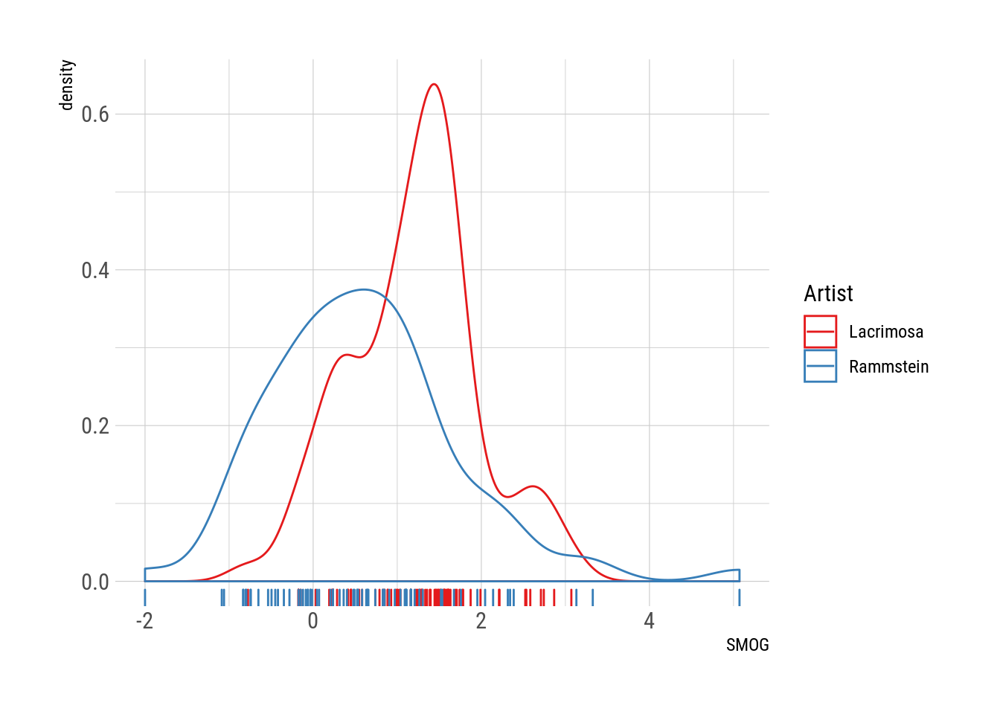
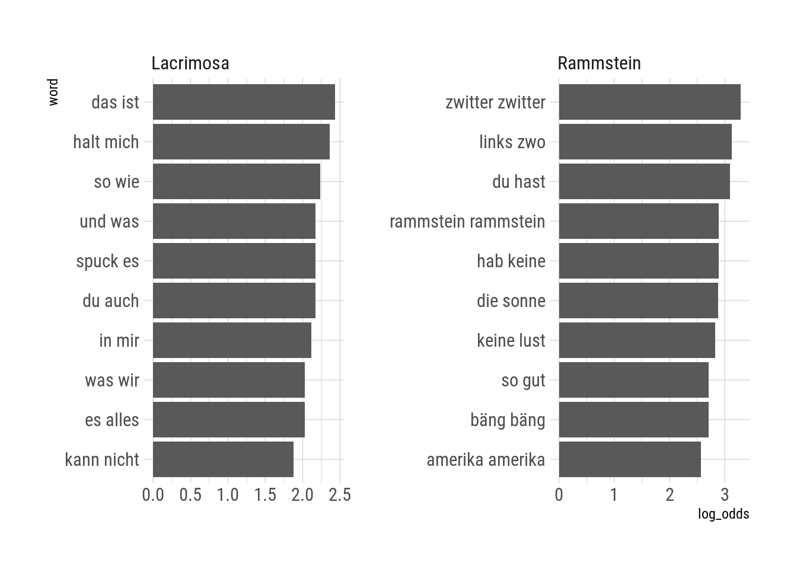

Rammstein vs. Lacrimosa
In English: Rammstein vs. LacrimosaHace un tiempo una conocida twiteó que había tenido que comprarse un libro entero para aprender los géneros gramaticales del alemán. Entre las repuestas, había una persona que contaba que de adolescente creyó (erróneamente) que podría aprender alemán sólo escuchando Rammstein. Habeindo estudiado unos drei Jahre de alemán al mismo tiempo que escuchaba Rammstein y otras bandas en alemán, las letras de Rammstein siempre me parecieron extremadamente simples. Tan simples, de hecho, que sospecho que Till Lindemann trata de escribir de forma fácil pensando en los estudiantes principantes de alemán.
Decidí explorar esta idea. Para eso descargué las letras de Rammstein y medí su complejidad. Como comparación usé letras de Lacrimsoa, otra banda germanoparlante de mi juventud.
Un poco de los datos
Para quienes no estén familiarizados con ambas bandas, este es el estribillo de Sonne, de Rammstein:
Eins, hier kommt die Sonne.
Zwei, hier kommt die Sonne.
Drei, sie ist der hellste Stern von allen.
Vier, hier kommt die Sonne.
Más allá de las sutilezas de significado y el uso de metáforas, la estructura sintáctica es recontra simple. Para colmo, como repite los números del uno al diez una y otra vez, casi que parece una canción diseñada para que los chicos aprendan a contar.
Por otro lado, este es un recorte de Warum so Tief, de Lacrimosa:
Warum so tief - und warum gerade jetzt?
Warum vor ihr - warum diese Ironie?
Warum so hart - und warum nicht einfach besiegt?
Muss ich denn wirklich für jede Begegnung
für immer und ewig mit all meiner Liebe bezahlen?
Einmal ohne das eine und endgültige Gefühl - verloren zu sein
Nur einmal bei ihr - keine Tobsucht in Ketten
Doch ich kann es nicht ’mal bestreiten - dass ich euch liebe
Mutter Angst und Vater Schmerz
Creo que el contraste se aprecia fácilmente. En particular, los últimos dos versos de la primera estrofa arman una oración sorprendentemente larga, especialmente para ser una canción.
Estos dos ejemplos están clarmaente seleccionados para ilustrar mi idea. Vamos a cuantificar la cosa analizando todas las canciones de cada banda.
Consiguiendo los datos
Quiero las letras correspondientes a los discos de estudio de ambas bandas. Podría automatizar esto scrappeando, por ejemplo, los artículos de wikipedia correspondientes, pero fue más fácil armar la lista a mano.
library(data.table)
library(magrittr)
library(ggplot2)
theme_set(hrbrthemes::theme_ipsum_rc())lacrimosa <- data.table(
album = c("Angst", "Einsemkeit", "Satura", "Inferno", "Stille", "Elodia", "Fassade", "Echos",
"Lichtgestalt", "Sehnsucht", "Revolution", "Hoffnung", "Testimonium"),
year = c(1991, 1992, 1993, 1995, 1997, 1999, 2001, 2003,
2005, 2009, 2012, 2015, 2017)
)
rammstein <- data.table(
album = c("Herzeleid", "Sehnsucht", "Mutter", "Reise Reise", "Rosenrot",
"Liebe ist fur alle da", "Rammstein"),
year = c(1995, 1997, 2001, 2004, 2005, 2009, 2019)
)
albums <- rbindlist(list(Lacrimosa = lacrimosa,
Rammstein = rammstein),
idcol = "artist")Luego, usé el paquete genius que descarga las letras de (sorpresa) Genius1. Lo que hago es agregar la información de las letras al data frame anterior:
albums <- albums %>%
genius::add_genius(artist, album) %>%
as.data.table() %>%
.[artist == "Lacrimosa" & album == "Sehnsucht", album := "Sehnsucht (L)"]
# (Las dos bandas tienen un album llamado Sehnsucht)Ahora cada fila de albums es un verso de cada canción de cada artista.
DT::datatable(albums) %>%
widgetframe::frameWidget()Legibilidad de las letras de Rammstein
Con estos datos voy a tratar de testear mi hipótesis. ¿Pero como? Lo que voy a hacer es calcular la legibilidad de cada letra. Mi suposición es que las letras de Rammstein van a tener menor grado de legibilidad (es decir, son más simples) que las de Lacrimosa. Una lmitación es que las formulas de legibilidad están basadas en inglés. Este problema está muy presente siempre que se analizan textos que no sean en inglés. En este caso, googleé un poco y encontŕe que la fórmula SMOG tiene una variante adaptada al alemán que está implementada en el paquete quantea.
Relacionado con eso, no todas las canciones de estas bandas están en Alemán. La mayoría de los álbumes de Lacrimosa tienen al menos una canción en inglés (generalmente cantada por Anne Nurmi en vez de Tilo Wolff). Así que voy a tener que detectarlas y descartarlas en partes del análisis. De nuevo google me salvó, y encontré el paquete textcat, que voy a considerar una caja negra porque ya sería demasiado.
# Join all verses from each song
full_lyrics <- albums %>%
na.omit() %>%
.[, .(lyric = paste0(lyric, collapse = ".\n") ),
by = .(artist, album, year, track_title)]
# Get the language
full_lyrics[, language := textcat::textcat(lyric),
by = .(track_title, artist, album)]
# How many songs for each language?
full_lyrics %>%
.[, .N, by = .(artist, language)] %>%
.[order(-N)] %>%
knitr::kable()| artist | language | N |
|---|---|---|
| Lacrimosa | german | 81 |
| Rammstein | german | 75 |
| Lacrimosa | english | 16 |
| Rammstein | scots | 3 |
| Lacrimosa | scots | 2 |
| Lacrimosa | catalan | 1 |
| Lacrimosa | romanian | 1 |
| Lacrimosa | finnish | 1 |
| Rammstein | english | 1 |
| Rammstein | portuguese | 1 |
Como era de esperarse, la gran mayoría de las canciones están en Alemán pero una parte improtante de las de Lacrimosa están en inglés. Algunas parecen mal clasificadas y tuve que mirarlas a mano. Las marcada como “scots” son canciones en inglés. Las que supuestamente están en catalán o romano son canciones instrumentales que el paquete genius no parece procesas correctamente. La que está en “portugués” es Te quiero, Puta de Rammstein que está, obviamente, en español. Finalmente, Lacrimosa efectivamente tiene una canción que está en finlandés.
Cabe notar que como las canciones son poesía no tienen oraciones marcadas con punto. Tuve que asumir que cada verso es una oración.
Otra limitación importante es que estas medidas de legibilidad están pensadas para prosa, no para poesía, por lo que su validez en este caso no está garantizada.
Con esto, computo la legibiliad únicamente de las canciones en alemán.
full_lyrics[language == "german",
"SMOG" := quanteda::textstat_readability(lyric, measure = "SMOG.de")$SMOG.de]
full_lyrics %>%
.[language %in% "german"] %>%
ggplot(aes(SMOG)) +
geom_density(aes(color = artist)) +
geom_rug(aes(color = artist)) +
scale_color_brewer("Artist", palette = "Set1")
Mh.. ü§î. Hip√≥tesis confirmada? Las letras de Rammstein definitivamente son más bien simplonas. Aunque ojo, ya que las tres canciones más complejas son de Rammstein. Esto es un poco enga√±oso, quizás. Esta es la canci√≥n más compleja:
full_lyrics[which.max(SMOG)] %>%
with(cat(lyric))## Bewahret einander vor Herzeleid.
## Denn kurz ist die Zeit die ihr beisammen seid.
## Denn wenn euch auch viele Jahre vereinen.
## Einst werden sie wie Minuten euch scheinen.
## Herzeleid.
## Bewahret einander vor der ZweisamkeitHerzeleid es bastante corta (en términos de letra) y no es tan terriblemente complicada. Pero sí tiene varias palabras largas. Irónicamente la letra proviene de un poema tradicional que puede encontrarse colgado en muchas casas.
Poema Herzeleid
Algo similar para con la segunda canción más compleja (Zeig dich) que está compuesta casi exclusivamente por versos de dos palabras. Esto no me da demasiada confianza en estos resultados. Pero si vemos el otro extremo, todo tiene más sentido:
full_lyrics[which.min(SMOG)] %>%
with(cat(lyric))## Du, du hast, du hast mich.
## Du, du hast, du hast mich.
## Du, du hast, du hast mich.
## Du, du hast, du hast mich.
## Du, du hast, du hast mich, du hast mich.
## Du hast mich gefragt, du hast mich gefragt.
## Du hast mich gefragt und ich hab' nichts gesagt.
## Willst du bis der Tod euch scheidet.
## Treu ihr sein für alle Tage?(Ja) Nein.
## (Ja) Nein.
## Willst du bis zum Tod, der scheide.
## Sie lieben auch in schlechten Tagen?(Ja) Nein.
## (Ja) Nein.
## Du, du hast, du hast mich.
## Du, du hast, du hast mich.
## Du, du hast, du hast mich, du hast mich.
## Du hast mich gefragt, du hast mich gefragt.
## Du hast mich gefragt und ich hab' nichts gesagt.
## Willst du bis der Tod euch scheidet.
## Treu ihr sein für alle Tage?(Ja) Nein.
## (Ja) Nein.
## Willst du bis zum Tod, der scheide.
## Sie lieben auch in schlechten Tagen?(Ja) Nein.
## (Ja) Nein.
## Willst du bis der Tod euch scheidet.
## Treu ihr sein(Ja) Nein.
## (Ja) NeinLa canción más simple es Du hast. Completamente comprensible ya que es una canción bastate “boba”, al menos en lo que respecta a legibilidad. Tiene versos muy cortos, con palabras muy cortas y una estructura muy simple. Lo que el valor SMOG no captura es que que además es tremendamente repetitiva. Prácticamente tiene sólo 3 estrofas distintas!
Esto resuena con mi exepriencia con ambas bandas. Rammstein sigue la estructura tradicional de canciones con estribillos, estrofas y puentes, mientras que Lacrimosa no tiene problema en usar letras más parecidas a la prosa, con poca repetición. Por ejemplo, Der Strasse der Zeit directamente no tiene estribillo y contando la proporción de estrofas únicas se puede ver que sólo 7% de las líneas se repiten.
albums[track_title == "Die Strasse der Zeit"] %>%
.[, mean(duplicated(lyric))]## [1] 0.07017544Y esto se puede extender a todas las canciones de la discografía de cada banda:
albums %>%
.[, .(repetition = mean(duplicated(lyric)), .N), by = .(track_title, artist)] %>%
ggplot(aes(repetition)) +
geom_density(aes(color = artist)) +
geom_rug(aes(color = artist)) +
scale_color_brewer("Artist", palette = "Set1")
Guau! La diferencia es increíble. Mientras que Rammstein hace canciones con más del 30% de su estrofas repetidas, muy pocas canciones de Lacrimosa repiten más del 20% de sus líneas. Es más, hay una buena cantidad de canciones de Lacrimosa que no tienen absolutamente nada de repetición!
Uniendo ambas medidas, aparece una distinción bastante clara.
full_lyrics %>%
.[language == "german"] %>%
.[, repetition := mean(duplicated(strsplit(lyric, ".\n")[[1]])),
by = .(track_title, artist)] %>%
ggplot(aes(repetition, SMOG)) +
geom_point(aes(color = artist)) +
geom_density_2d(aes(color = artist), adjust = 1.5, bins = 4) +
scale_color_brewer("Artist", palette = "Set1")
Las canciones de Rammstein son generalmente más simples y tienen muchísima más repetición.
No sólo repiten líneas a lo pavote, sino que los versos en las canciones de Rammstein muchas veces ni siquiera son oraciónes completas. Esto se puede inferir usando el log odds ratio entre ambos artistas para obtener pares de palabras característicamente “rammsteinianos” vs “lacrimosianos”.
full_lyrics %>%
.[language == "german"] %>%
.[, tidytext::unnest_tokens(.SD, word, lyric, token = "ngrams", n = 2),
by = .(track_title, artist)] %>%
.[, .N, by = .(word, artist)] %>%
.[!is.na(word)] %>%
tidylo::bind_log_odds(artist, word, N) %>%
.[order(-log_odds)] %>%
.[, .SD[1:10], by = artist] %>%
.[, word := tidytext::reorder_within(word, log_odds, artist)] %>%
ggplot(aes(word, log_odds)) +
geom_col() +
tidytext::scale_x_reordered() +
coord_flip() +
facet_wrap(~artist, scales = "free") 
Los pares de palabras que caracterizan a las letras de Lacrimosa son partes comunes de oraciones correctas, como “so wie” (“como”) o “das ist” (“eso es”). Las de Rammstein, en cambio, se distinguen por repetir palabras sin estructura sintáctica, como “bang bang”, “link zwo” (“izquierda dos”; el verso completo es “izquierda dos tres cuatro”) y “zwiter zwiter”.
Simpleza ≠ falta de calidad
Me divertí un poco aprendiendo estas herramientas básicas para la manipulación de datos textuales, pero no hay nada revolucionario en la conclusión de que las letras de Rammstein son más imples y más “cancioneras” que las de Lacrimosa. No hace falta webscapping ni R, sólo es necesario poder escuchar música.
Más importane, nada dice que letras más largas y más complicadas impliquen mejores canciones. Bajo cualqueir medida, Du hast es terriblemnete simple, pero se basa en un juego de palabras interesante y en romper las expectativas.